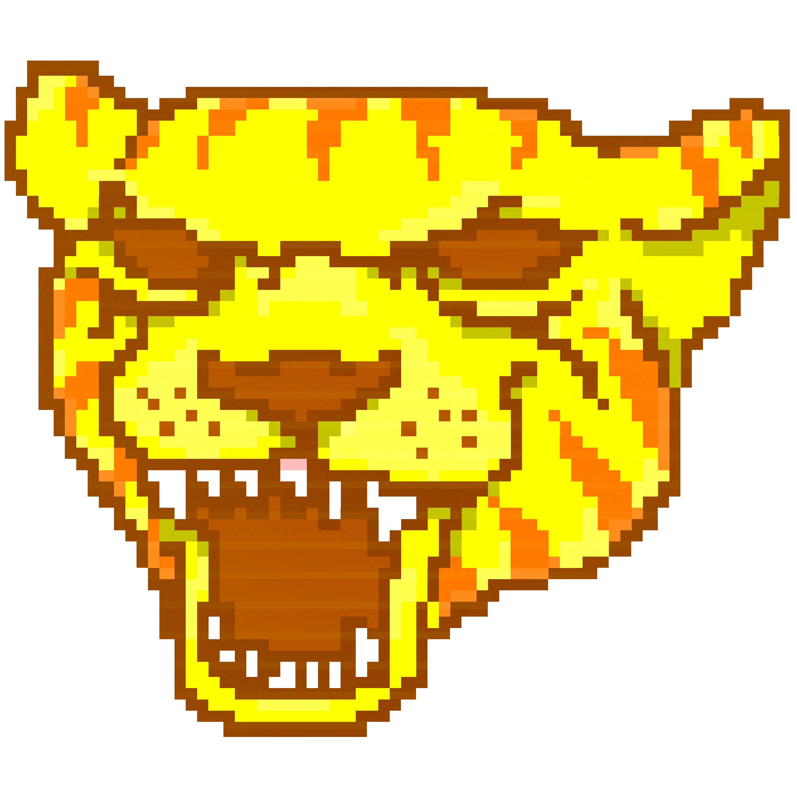
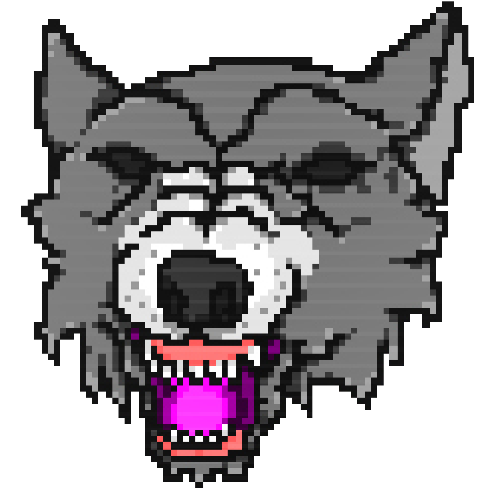
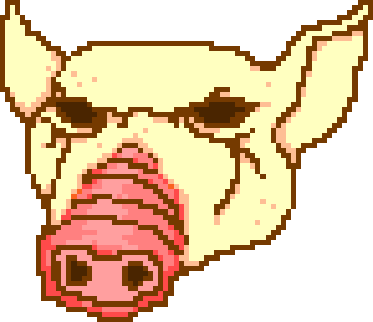

Hotline Miami é um jogo eletrônico 2D de ação com visão de cima criado por Jonatan Söderström e Dennis Wedin. Ambos o desenvolveram usando a designação Dennaton Games, com o game sendo lançado pela Devolver Digital no dia 23 de outubro de 2012 para Microsoft Windows.
Situado em Miami no ano de 1989, a trama do jogo consiste em dois protagonistas conhecidos como Jacket e Biker, os quais recebem telefonemas instruindo-os a cometer massacres contra a máfia russa local. O game mistura uma perspectiva de cima com situações stealth, violência extrema, e narrativa surreal, juntamente com uma trilha sonora e visuais influenciadas pela cultura dos anos 1980. O jogo em si foi influenciado em parte pelo filme neo-noir de 2011 Drive, do diretor Nicolas Winding Refn, assim como o documentário Cocaine Cowboys, de 2006. Após seu lançamento, Hotline Miami recebeu avaliações muito positivas dos críticos, com os principais elogios vindo de sua narrativa, seus temas, sua trilha sonora, e sua intensa jogabilidade. A continuação do game, intitulada Hotline Miami 2: Wrong Number, foi anunciada em 2013 e lançada no dia 10 de março de 2015.
No início de cada fase, o jogador pode selecionar uma máscara dentre as suas desbloqueadas que oferecem diferentes habilidades e possibilitam estratégias. Veja alguns exemplos
| Máscaras | Nome | Habilidade |
|---|---|---|
| Richard | É a primeira máscara do jogo e não oferece nenhuma habilidade. | |
|  | Tony | O jogador consegue matar qualquer oponente dando-lhe apenas um soco. |
|  | Dennis | Inicie a fase com uma faca |
|  | Aubrey | Mais armas aparecem na fase |